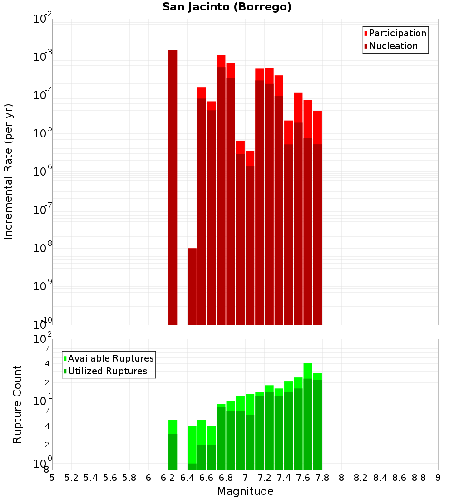
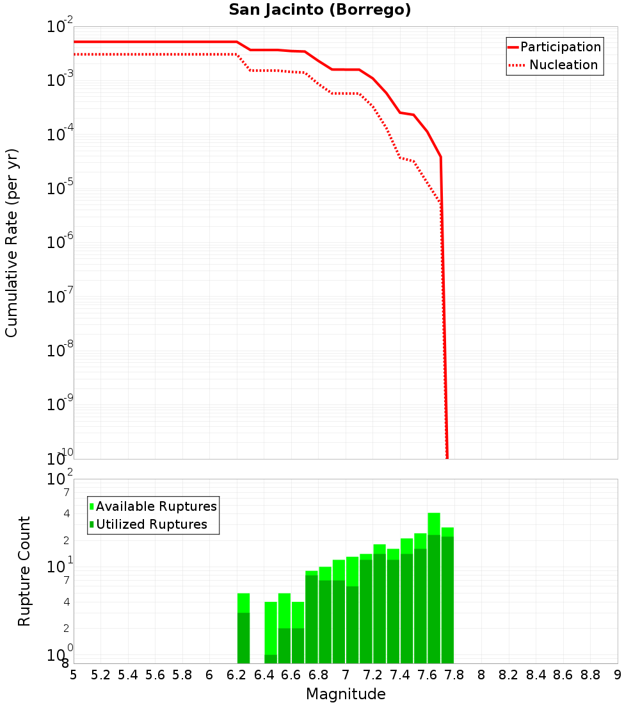
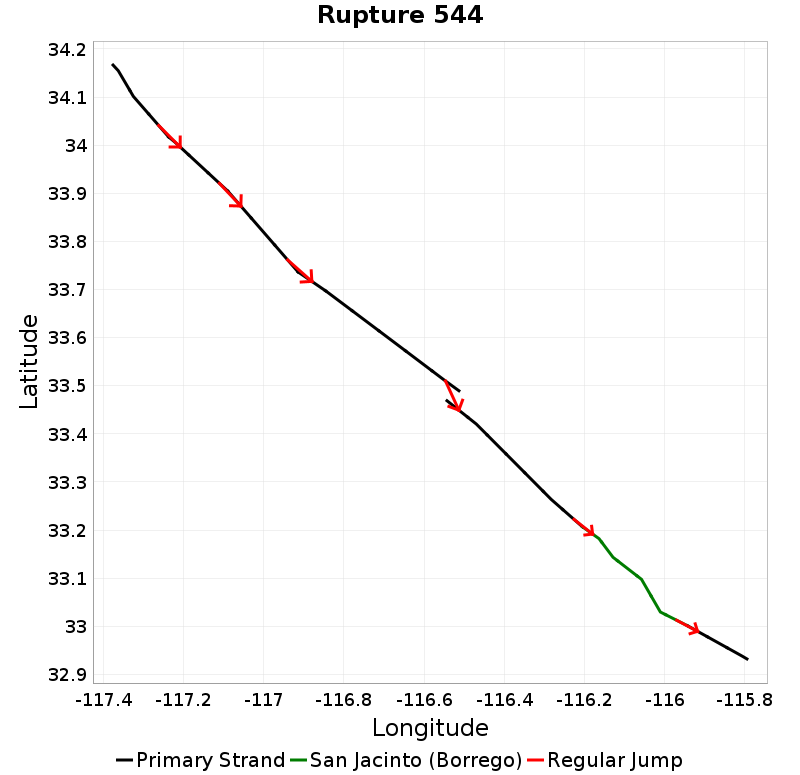
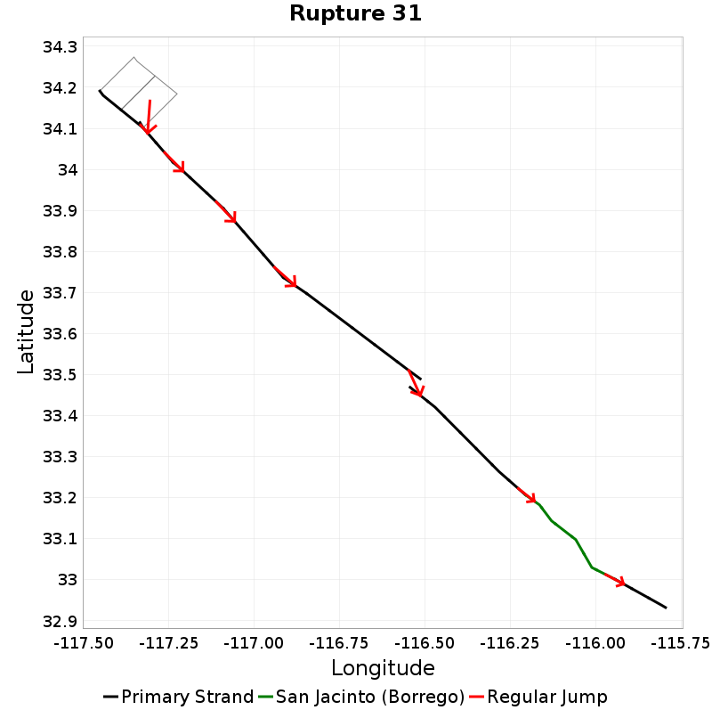
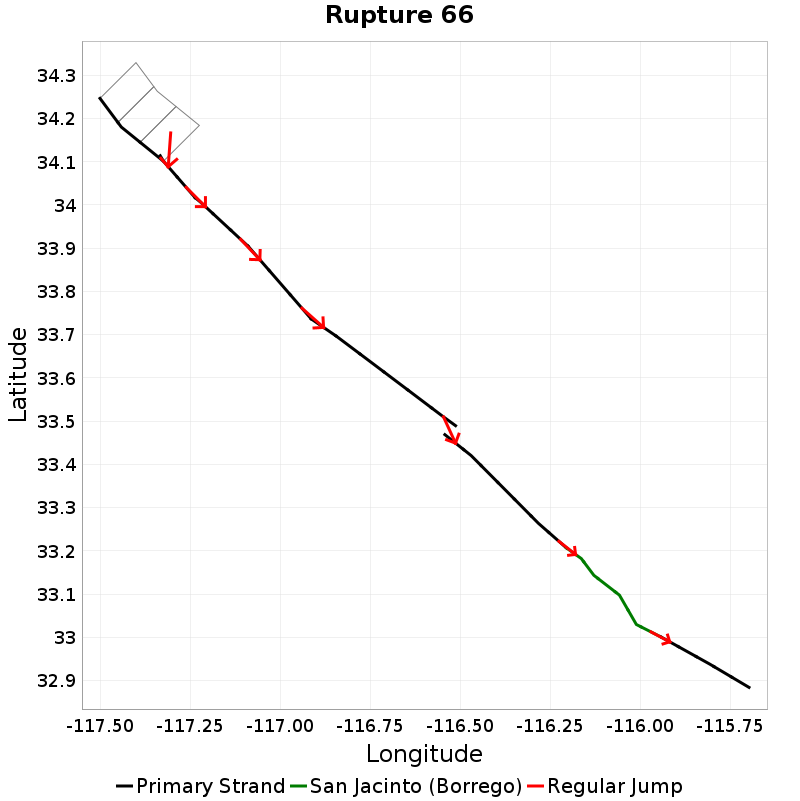
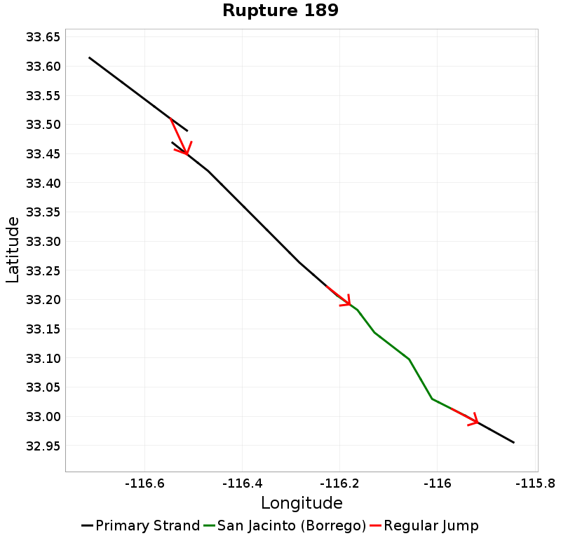
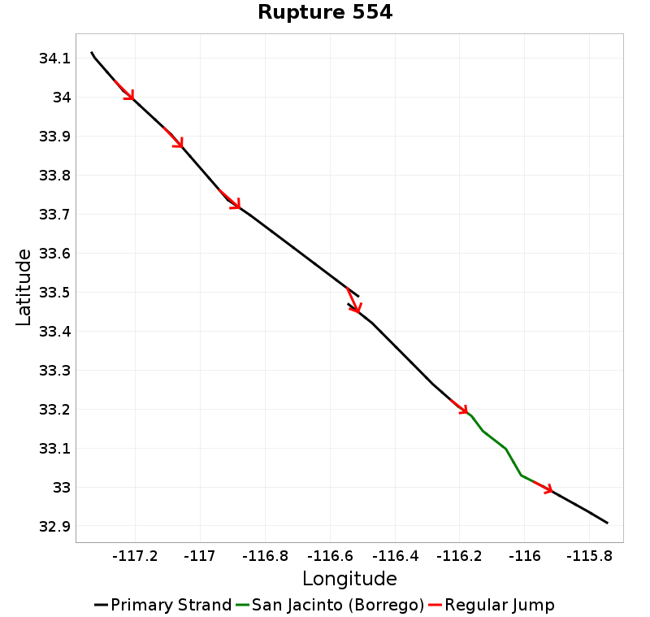
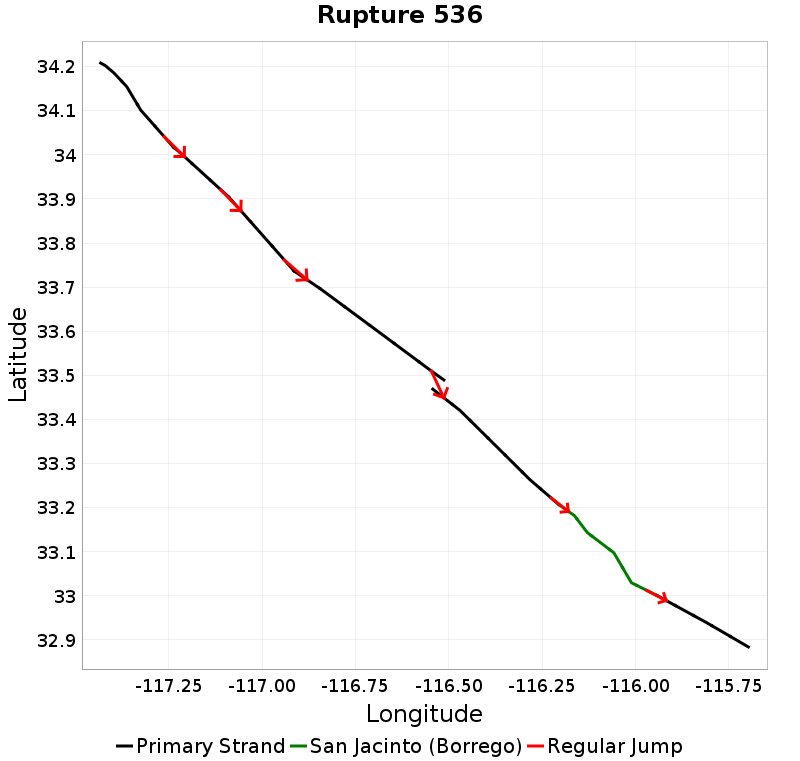
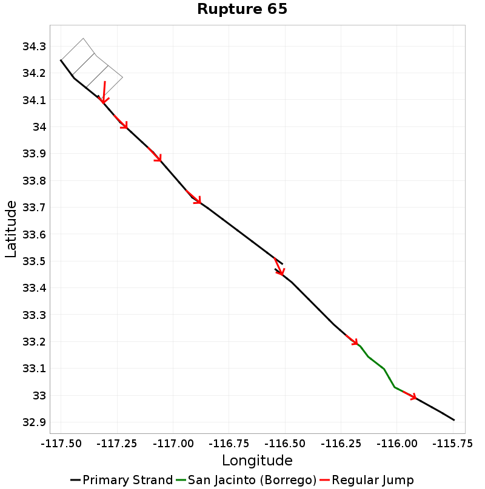
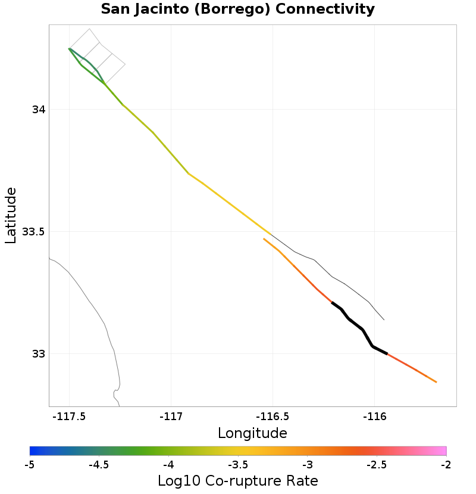

San Jacinto (Borrego) Details
| Property | Value |
|---|---|
| Rupture Count | 224 |
| Magnitude Range | [6.24, 7.77] |
| Length Range | [11, 230] km |
| Total Rate | 0.0051596505 /yr |
| Multi-Fault Rate | 0.0036431574 /yr (70.61%) |
| Directly-Connected Faults | 2 |
| All Co-Rupturing Faults | 7 |
Table Of Contents
- Magnitude-Frequency Distribution
- Along-Strike Values
- Scalar Histograms & Example Ruptures
- Connectivity
Magnitude-Frequency Distribution
| Incremental | Cumulative |
|---|---|
|  |  |
Along-Strike Values
Scalar Histograms & Example Ruptures
Rupture Magnitude

| Minimum: 6.24 | p50: 7.41 | p90: 7.71 | p95: 7.74 |
|---|---|---|---|
 |  |  |  |
| p97.5: 7.75 | p99: 7.76 | p99.9: 7.77 | Maximum: 7.77 |
 |  |  |
Rupture Length
| Minimum: 11.42 | p50: 110.77 | p90: 201.61 | p95: 213.89 |
|---|---|---|---|
|  |  |  |
| p97.5: 220.9 | p99: 224.67 | p99.9: 229.93 | Maximum: 229.93 |
|  |  |
Cumulative Jump Dist

| Minimum: 0.0 | p50: 3.49 | p90: 3.49 | p95: 3.61 |
|---|---|---|---|
|  | |  |
| p97.5: 3.61 | p99: 3.61 | p99.9: 3.61 | Maximum: 3.61 |
 |  |
Connectivity
 |  |
|---|
Nearby Sections
| Fault Section |
|---|
| San Jacinto (Coyote Creek), 0 km away |
| San Jacinto (Superstition Mountain), 0 km away |
San Jacinto (Coyote Creek), 0 km away
| slip_rate_inferred_gr_seg_solution | |
|---|---|
| Connected? | true |
| Directly Connected? | true |
| Co-rupture Count | 189 |
| Co-rupture Rate | 0.0023912995 |
San Jacinto (Superstition Mountain), 0 km away
| slip_rate_inferred_gr_seg_solution | |
|---|---|
| Connected? | true |
| Directly Connected? | true |
| Co-rupture Count | 104 |
| Co-rupture Rate | 0.0026467734 |